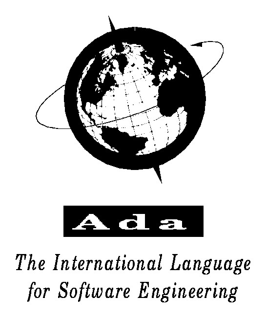

|  |
|
Ada è un linguaggio di programmazione "general-purpose", inizialmente sviluppato verso la fine degli anni settanta su iniziativa del Dipartimento della Difesa (DOD) degli Stati Uniti. Sia le specifiche che lo sviluppo del linguaggio furono affidati a bandi di gara; l'obiettivo era quello di creare il "linguaggio perfetto". Tra le 17 proposte inviate in seguito al bando indetto dal DOD, fu scelto nel 1979 il progetto di Jean Ichbiah del CII Honeywell Bull e fondatore della Aonix. Le specifiche divennero uno standard ANSI nel 1983. |
Go |
Home |
Questo sito è stato creato da Alexander Aquino |